ao
conjunto de pontos
ao
conjunto de pontos  ,
,  e
e  , temos que minimizar o
resíduo2
, temos que minimizar o
resíduo2
Eventualmente, problemas de ajuste de curvas podem recair num
sistema não linear. Por exemplo, para ajustar função ao
conjunto de pontos , e , temos que minimizar o
resíduo2


 e
e  . Esse sistema pode ser resolvido pelo método
de Newton-Raphson, o que pode se tornar custoso, ou mesmo inviável
quando não dispomos de uma boa aproximação da solução para inicializar o
método.
. Esse sistema pode ser resolvido pelo método
de Newton-Raphson, o que pode se tornar custoso, ou mesmo inviável
quando não dispomos de uma boa aproximação da solução para inicializar o
método.
Felizmente, algumas famílias de curvas admitem uma transformação que nos
leva a um problema linear. No caso da curva  , observe que
, observe que
 . Assim, em vez de ajustar a curva original
. Assim, em vez de ajustar a curva original  a tabela
de pontos, ajustamos a curva submetida a transformação logarítmica
a tabela
de pontos, ajustamos a curva submetida a transformação logarítmica

 ,
,  e resolvemos o sistema
linear
e resolvemos o sistema
linear


Dado um conjunto de pontos  , a derivada
, a derivada  pode ser calculada de
várias formas. Na próxima seção trabalharemos com diferenças finitas, que é mais
adequada quando as abcissas estão próximas e os dados não sofrem perturbações
significativas. Na seção subsequente trataremos os casos quando os dados oscilam
via ajuste ou interpolações de curvas.
pode ser calculada de
várias formas. Na próxima seção trabalharemos com diferenças finitas, que é mais
adequada quando as abcissas estão próximas e os dados não sofrem perturbações
significativas. Na seção subsequente trataremos os casos quando os dados oscilam
via ajuste ou interpolações de curvas.
A derivada  de uma função
de uma função  no ponto
no ponto  é
é
 |
Da definição, se 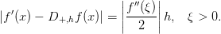 é pequeno (não muito pequeno para evitar o cancelamento catastrófico), é esperado que uma aproximação para a derivada no ponto 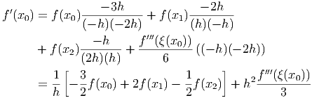 seja dada por:
 | (8.1) |
>>>>>>> 8ffe51d4bbc8f1e500cc9c435f05cb1c6f0ffef3
Solução. Usando a fórmula de diferenças dada pela Equação (8.1), devemos calcular:
 |
para cada valor de  solicitado, obtemos a Tabela ??.
solicitado, obtemos a Tabela ??.
No Scilab, podemos calcular a aproximação da derivada  com
com  usando as seguintes linhas de código:
usando as seguintes linhas de código:
E, similarmente, para outros valores de  e
e  .
. 
Observe que, no exemplo anterior, quanto menor  , melhor é a aproximação,
visto que o valor exato para a derivada é
, melhor é a aproximação,
visto que o valor exato para a derivada é  . Porém,
quando
. Porém,
quando  , a derivada numérica é
, a derivada numérica é  (usando aritmética
double), resultado pior que aquele para
(usando aritmética
double), resultado pior que aquele para  . Além disso, na mesma
aritmética, quando
. Além disso, na mesma
aritmética, quando  a derivada numérica calculada é zero
(cancelamento catastrófico). Isso nos motiva a pensar qual é o melhor
a derivada numérica calculada é zero
(cancelamento catastrófico). Isso nos motiva a pensar qual é o melhor
 .
.
Essa aproximação para a derivada é denominada diferenças progressivas. A derivada numérica também pode ser aproximada usando definições equivalentes:


Exemplo 8.1.2. Calcule a derivada numérica da função  no ponto
no ponto  usando diferenças progressivas, diferenças regressivas e
diferenças centrais com
usando diferenças progressivas, diferenças regressivas e
diferenças centrais com  ,
,  e
e  .
.
Solução 7.4.1. Os coeficientes obtidos a partir dessa linearização são
aproximados, ou seja, são diferentes daqueles obtidos quando aplicamos
mínimos quadrados não linear. Observe que estamos minimizando
![∑ [lny - ln (f(x ))]2
i i i](main3287x.png) em vez de
em vez de ![∑ [y - f(x )]2
=======
src=](main3288x.png) em vez de
em vez de ![∑ [y - f(x )]2
>>>>>>> 62bea6a0d0a1d3eca740d93a452697554da972de
i i i](main3346x.png) . No exemplo resolvido, a
solução do sistema não linear original seria
. No exemplo resolvido, a
solução do sistema não linear original seria  e
e  =======
class="ec-lmbx-12">ão. A tabela abaixo mostra a derivada numérica para cada valor de
=======
class="ec-lmbx-12">ão. A tabela abaixo mostra a derivada numérica para cada valor de
 .
.
| Diferenças | h=0,1 |
| Progressivas |  |
| Regressivas |  |
| Centrais |  |
| Diferenças | h=0,01 |
| Progressivas |  |
| Regressivas | 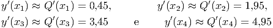 |
| Centrais | 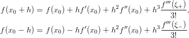 |
| Diferenças | h=0,01 |
| Progressivas | 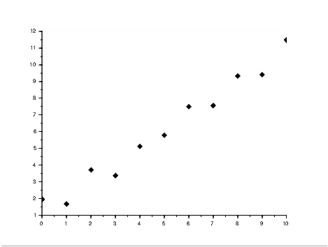 |
| Regressivas |  |
| Centrais | 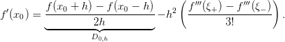 |
Seja 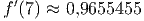 a aproximação da derivada de 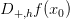 em 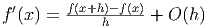 por diferenças progressivas, 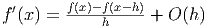 a aproximação por diferenças regressivas e 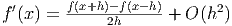 a aproximação por diferenças centrais, então


Exemplo 8.1.3. Calcule a derivada numérica e o erro de truncamento de 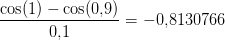 em 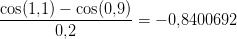 pela fórmula de diferença progressiva para 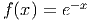, 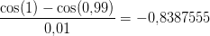 e 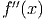.
Solução. Como 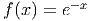, então 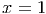.
Para entender como os erros de arredondamento se propagam ao calcular as derivadas numéricas vamos considerar o operador de diferenças finitas progressivas
![|------------------|---------------|--------------------------|
|------curva-------|transforma-ção-|---problema-linearizado----|
| bx | | |
|----y-=--ae-------|---y˜=--ln-y----|------y˜=--ln-a-+-bx-------|
| b | | |
|-----y-=-ax-------|---y˜=--ln-y----|-----˜y-=-ln-a +-bln-x------|
| y = axbecx | y˜= ln y | ˜y = ln a + bln x + cx |
|------------------|---------------|--------------------------|
| y = ae(b+cx)2 | y˜= ln y |˜y = ln a + b2 + bcx + c2x2|
|------------------|---------------|--------------------------|
| y = ba+x | y˜= 1y | ˜y = ba + 1ax |
|------------------|---------------|--------------------------|
|y = A cos(ωx + ϕ) | - |y = acos(ωx ) - b sin (ωx )|
| | | |
<<<<<<< HEAD
----ω-conhecido---------------------a-=-A-cos(ϕ),-b =-A-sin(ϕ-)-
=======
|---ω-conhecido----|----------------a-=-A-cos(ϕ),-b =-A-sin(ϕ-)-
| |
>>>>>>> 62bea6a0d0a1d3eca740d93a452697554da972de
=======
src=](main3349x.png)
Esta estimativa mostra que se o valor de 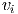 for muito pequeno o erro ao calcular a aproximação numérica cresce. Isso nos motiva a procurar o valor ótimo de 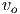 que minimiza o erro.
Exemplo 7.4.2. Encontre a função  da forma
da forma
 que ajusta a tabela de pontos
=======
src="main3351x.png" alt="y = f (x) = A cos(2πx + ϕ ) " class="math" > que ajusta a tabela de pontos
>>>>>>> 62bea6a0d0a1d3eca740d93a452697554da972de
que ajusta a tabela de pontos
=======
src="main3351x.png" alt="y = f (x) = A cos(2πx + ϕ ) " class="math" > que ajusta a tabela de pontos
>>>>>>> 62bea6a0d0a1d3eca740d93a452697554da972de

 fica pequeno.
>>>>>>> 2f43bff4df7198ad5fd8ebe602c2f00c0d1ecf01
fica pequeno.
>>>>>>> 2f43bff4df7198ad5fd8ebe602c2f00c0d1ecf01
Solução. Usando o
fato que  , onde
, onde  =======
src="main3353x.png" alt="y = A cos(2πx + ϕ ) = a cos(2πx ) - b sin(2πx ) " class="math" >, onde
=======
src="main3353x.png" alt="y = A cos(2πx + ϕ ) = a cos(2πx ) - b sin(2πx ) " class="math" >, onde  >>>>>>> 62bea6a0d0a1d3eca740d93a452697554da972de
e
>>>>>>> 62bea6a0d0a1d3eca740d93a452697554da972de
e  ,
, ![z = [ a b ]T](main3356x.png) é solução do problema
=======
class="ec-lmbx-12">ão. Segue a tabela com os valores da derivada para vários valores de
é solução do problema
=======
class="ec-lmbx-12">ão. Segue a tabela com os valores da derivada para vários valores de
 .
.
 |
 |
 |
Observe que o valor exato é  e o
e o  ótimo é algo entre
ótimo é algo entre  e
e
 .
. 
Para aproximar a derivada de uma função  em
em  ,
,  ou
ou  usaremos os três pontos vizinhos 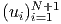,
usaremos os três pontos vizinhos 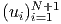,  e
e  . Uma
interpolação usando polinômios de Lagrange para esses três pontos é da forma:
. Uma
interpolação usando polinômios de Lagrange para esses três pontos é da forma:

|
| (8.2) |
Trocando 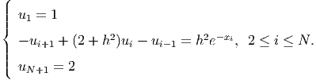 por 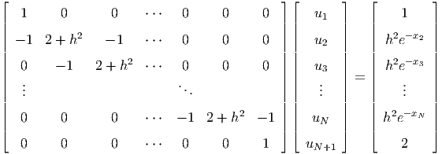, temos
|
|
Considerando uma malha equiespaçada onde 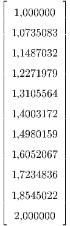 e  ,
temos:
,
temos:
|
>>>>>>> 8ffe51d4bbc8f1e500cc9c435f05cb1c6f0ffef3
|
Similarmente, trocando  por
por  ou trocando
ou trocando  por 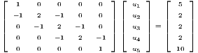 na expressão (8.2),
temos outras duas expressões
por 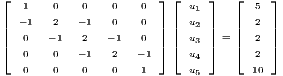 na expressão (8.2),
temos outras duas expressões

Analogamente, para construir as fórmulas de cinco pontos tomamos o polinômio de Lagrange para cinco pontos e chegamos a cinco fórmulas, sendo uma delas a seguinte:
![1 h4
f′(x0) = ----[f(x0 - 2h) - 8f(x0 - h ) + 8f (x0 + h ) - f (x0 + 2h)]+--f(5)(ξ(x0))
12h 30](main3558x.png) | (8.6) |
<<<<<<< HEAD
" class="math-display" > Portanto  . Observe que nesse exemplo
=======
src="main3369x.png" alt="f(x) = 13,909546 cos(2πx + 0,9613976 ) " class="math" >. Observe que nesse exemplo
>>>>>>> 62bea6a0d0a1d3eca740d93a452697554da972de
a solução do problema linear é a mesma do problema não linear.
. Observe que nesse exemplo
=======
src="main3369x.png" alt="f(x) = 13,909546 cos(2πx + 0,9613976 ) " class="math" >. Observe que nesse exemplo
>>>>>>> 62bea6a0d0a1d3eca740d93a452697554da972de
a solução do problema linear é a mesma do problema não linear.  =======
Exemplo 8.1.5. Calcule a derivada numérica de em
=======
Exemplo 8.1.5. Calcule a derivada numérica de em  pela fórmula de três e cinco pontos para , e
pela fórmula de três e cinco pontos para , e  .
.
Solução. A tabela mostra os resultados:
![|--------------------------|------------|---------------|-------------------|
| h | h = 0,1 | h = 0,01 | h = 0,001 |
|--------------------------|------------|---------------|-------------------|
| diferenças progressivas |- 0,2809448 | - 0,3125246 | - 0,3158289 |
|--------------------------|------------|---------------|-------------------|
| diferen ças regressivas |- 0,3545920 | - 0,3199024 | - 0,3165667 |
|--------------------------|------------|---------------|-------------------|
| três pontos usando (8.3) |- 0,3127746 | - 0,3161657 | - 0,3161974 |
|--------------------------|------------|---------------|-------------------|
|-três-pontos-usando--(8.4)--|--0,3177684--|---0,3162135---|-----0,3161978------|
| | | | |
|-três-pontos-usando--(8.5)--|--0,3135824--|---0,3161665---|-----0,3161974------|
| | | | |
|cinco--pontos-usando-(8.6)-|--0,3162384-----0,316197677---- 0,3161976736860--
| |](main3564x.png) .
>>>>>>> 8ffe51d4bbc8f1e500cc9c435f05cb1c6f0ffef3
=======
src="main3565x.png" alt=" ′
f (1,5) = - 0,3161976736856 " class="math" >.
>>>>>>> 2f43bff4df7198ad5fd8ebe602c2f00c0d1ecf01
.
>>>>>>> 8ffe51d4bbc8f1e500cc9c435f05cb1c6f0ffef3
=======
src="main3565x.png" alt=" ′
f (1,5) = - 0,3161976736856 " class="math" >.
>>>>>>> 2f43bff4df7198ad5fd8ebe602c2f00c0d1ecf01
Para aproximar a derivada segunda, considere as expansões em série de Taylor

 é
é

Exemplo 7.4.3. Encontre a função  da forma
da forma  que
ajusta a tabela de pontos
que
ajusta a tabela de pontos
 da forma
da forma  que
ajusta a tabela de pontos
que
ajusta a tabela de pontos
 para , e .
>>>>>>> 8ffe51d4bbc8f1e500cc9c435f05cb1c6f0ffef3
=======
src="main3574x.png" alt="x = 1,5 " class="math" > para
para , e .
>>>>>>> 8ffe51d4bbc8f1e500cc9c435f05cb1c6f0ffef3
=======
src="main3574x.png" alt="x = 1,5 " class="math" > para  ,
,  e .
>>>>>>> 2f43bff4df7198ad5fd8ebe602c2f00c0d1ecf01
e .
>>>>>>> 2f43bff4df7198ad5fd8ebe602c2f00c0d1ecf01
Solução. A tabela mostra os resultados:

 e
e  .
. 
Dado os valores de uma função em pontos , as derivadas
podem ser obtidas através da derivada de uma curva que melhor ajusta ou
interpola os pontos. Esse tipo de técnica é necessário quando os pontos são muito
espaçados entre si ou quando a função oscila muito. Por exemplo, dado os pontos
 e
e
, , , a parábola que melhor ajusta os pontos
=======
src="main3584x.png" alt="(0,1) " class="math" >, ,  ,
,  , a parábola que melhor ajusta os pontos
>>>>>>> 2f43bff4df7198ad5fd8ebe602c2f00c0d1ecf01
é
>>>>>>> 8ffe51d4bbc8f1e500cc9c435f05cb1c6f0ffef3
, a parábola que melhor ajusta os pontos
>>>>>>> 2f43bff4df7198ad5fd8ebe602c2f00c0d1ecf01
é
>>>>>>> 8ffe51d4bbc8f1e500cc9c435f05cb1c6f0ffef3

 e
e  ,
ou seja,
,
ou seja,  .
. 


Agora olhe o gráfico da seguinte tabela de pontos. >>>>>>> 8ffe51d4bbc8f1e500cc9c435f05cb1c6f0ffef3

Observe que as derivadas calculadas por diferenças finitas oscilam entre um
valor pequeno e um grande em cada intervalo e além disso, a fórmula progressiva
difere da regressiva significantemente. Por exemplo, por diferenças regressivas
 e por diferenças progressivas
e por diferenças progressivas  .
A melhor forma de calcular a derivada aqui é fazer um ajuste de curva. A reta que
melhor ajusta os dados da tabela é . Usando
esse ajuste, temos .
.
A melhor forma de calcular a derivada aqui é fazer um ajuste de curva. A reta que
melhor ajusta os dados da tabela é . Usando
esse ajuste, temos .
 no
ponto
no
ponto  usando
usando  ,
,  ,
,  e 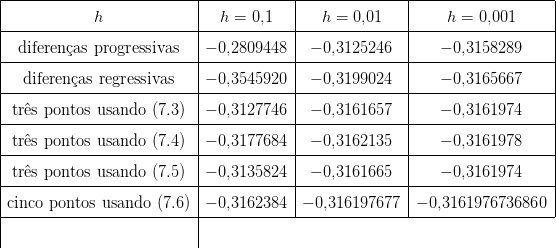.
e 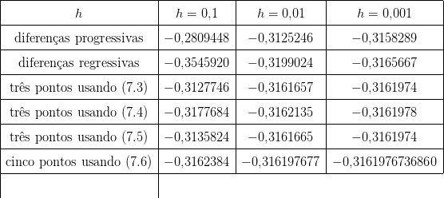.


![′′′
f ′(x0) = -1-[- 3f (x0) + 4f (x0 + h) - f(x0 + 2h)] + h2f-(ξ(x0))(8.3)
2h 3
′ -1- 2f′′′(ξ-(x0-))-
f (x0) = 2h [f(x0 + h) - f(x0 - h)] + h 6 (8.4)
1 f ′′′(ξ(x ))
f ′(x0) = ---[f(x0 - 2h) - 4f(x0 - h) + 3f (x0 )] + h2-------0-- (8.5)
2h 3](main3557x.png)